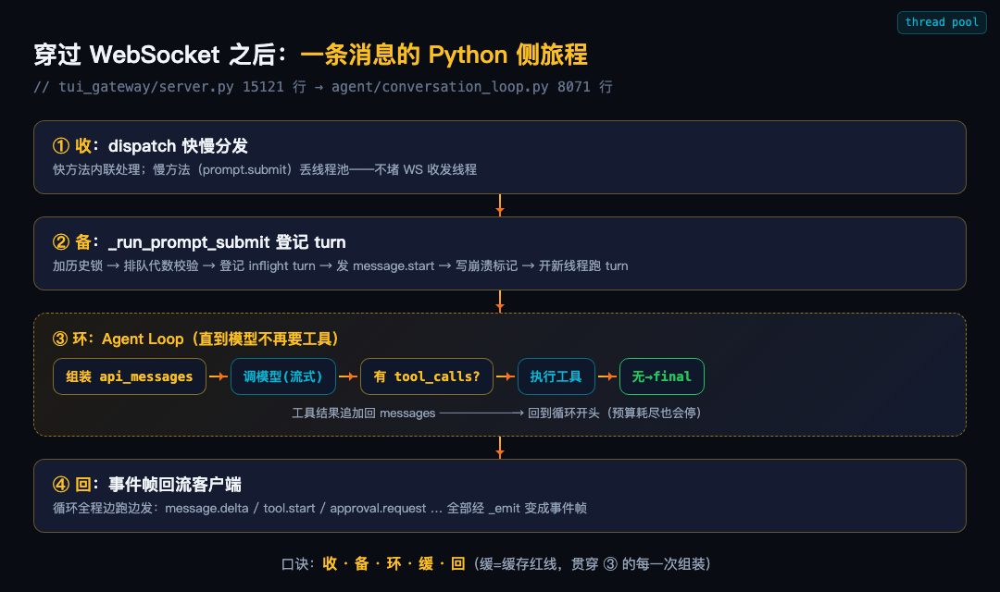
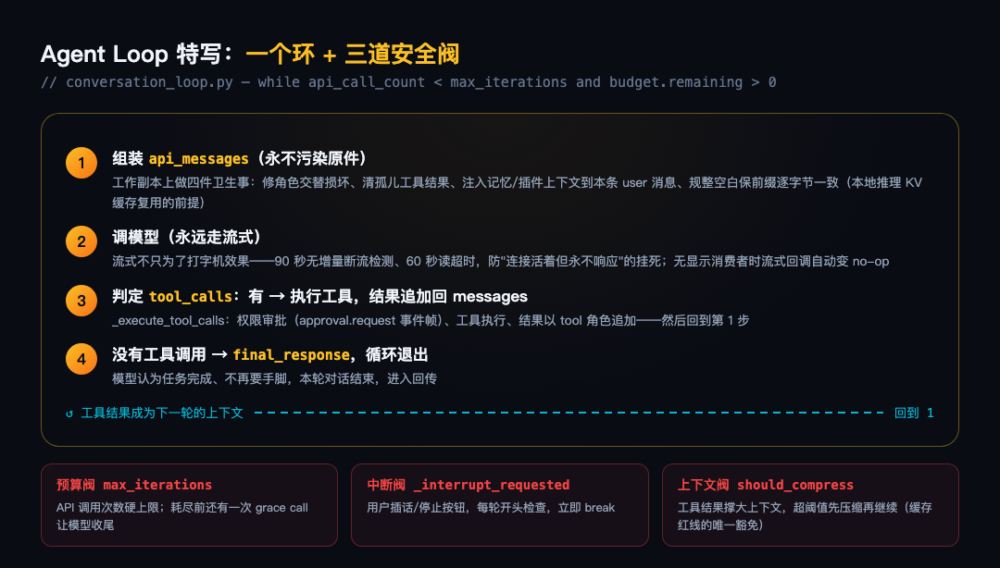
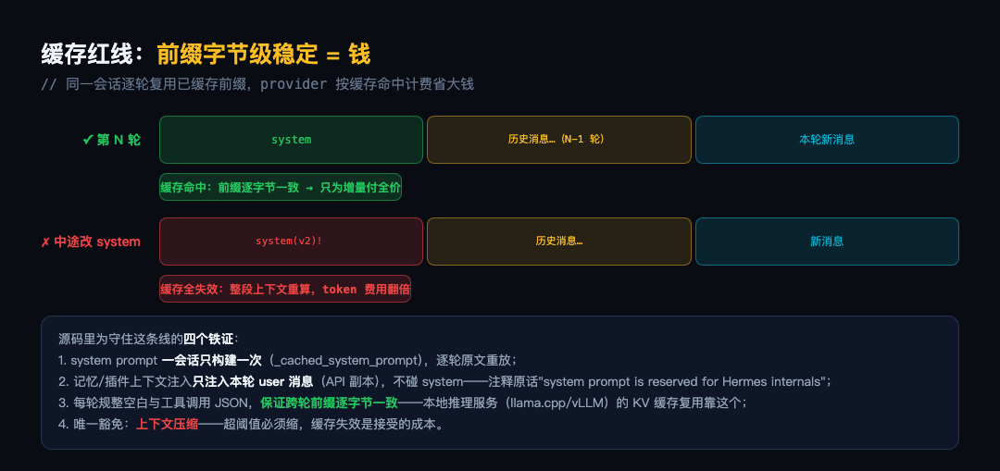
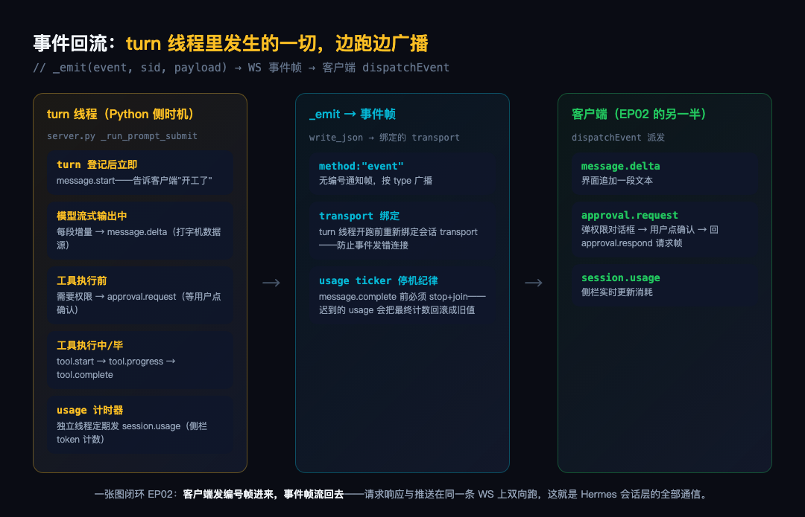

大家好我是郑同学。EP02 结尾说，下一篇穿过那层 WebSocket 到对岸，看 gateway 收到 prompt.submit 之后、事件流回来之前，Python 侧发生了什么。这一篇兑现。
先看下面这张全景图，一条消息在 Python 侧的旅程四步：收、备、环、回——中间的"环"就是主角 Agent Loop。贯穿全程还有一条隐形红线：缓存。

这一篇全程跟着同一个场景走：你在桌面端输入"帮我修一下这个 bug"，按下回车。这条消息从落进 Python 的那一刻起，每一步都会在源码里指给你看——四步不是四个知识点，是同一条消息的四个生命阶段：第 0.001 秒它被收下（收），第 0.01 秒它被登记备案（备），接下来的几十秒它在环里被反复咀嚼（环），全程每一毫秒它的产物都在往回流淌（回）。
口诀先行：收备环回四步走，缓存红线贯全程。
● ● ●
时间线第 0.001 秒。"帮我修一下这个 bug"变成的 prompt.submit 帧刚穿过 WebSocket，落进 Python 侧的第一站 dispatch()（tui_gateway/server.py）。
它做的事，用银行柜台打比方：快业务窗口直接办，慢业务取号去隔壁等。查个配置、列个会话，这种毫秒级的小事当场办完；跑模型这种一跑几十秒的大事，取个号丢给后台线程池，柜台立刻回头接待下一位。源码就这两行判断（真实节选）：
def dispatch(req, transport=None):
_rid, method, _params = normalized
if method not in _LONG_HANDLERS:
return handle_request(req)
# 慢方法：丢给线程池，worker 跑完自己写响应
_pool.submit(lambda: ctx.run(run))
为什么必须这样？因为管 WebSocket 收发的那条线程只有一条。要是它亲自去跑模型，几十秒内所有新消息都进不来——包括你后悔时按下的「停止」按钮。按钮按了没反应，界面像死了一样，其实是收发线程正在忙。取号制的本质：柜台永远空闲，谁也不能堵住门口。
还有一个容易漏的细节。后台线程池的工人是从自己的工位过来的，看不见柜台这边的白板——而「这条请求该回复给哪个客户端」恰恰写在那块白板上。所以扔进池之前，得先把白板上的内容抄一份随请求一起带过去。回信通道跟着请求一起搬家，工人在后台干完活，照着抄本把回复写回正确的连接——桌面端发的回桌面端，手机发的回手机，不会串门。
线程池接过这条消息，"收"的阶段结束——但它还不能直接跑模型。时间线第 0.01 秒，进入"备"：一条要跑几十秒的大任务，先得把案底登记清楚。
● ● ●
进了池的 prompt.submit 走到 _run_prompt_submit。跑模型之前先登记——这段代码密度是全文最高，但别怕，每个动作对应一件生活里的事。先总览六个章是什么，再看源码：
① 查票——你的消息是排队进来的，排到的时候会话可能已经变过了。先核对「排队时拿的号码」和「当前的号码」是不是同一个，不是就说明这张票过期了，直接作废。防止一条过期的旧消息突然插进来，把新对话搅乱。
② 收图——你随消息附的截图，这时候正式取走，取完立刻清空。不清空的话，下一轮对话会把上一轮的图再带一遍。
③ 立案——登记一个「正在处理中」的标记（inflight turn）。之前有个失败的旧案子还没撤？新的直接把它换掉，绝不叠加——旧案子的残骸不会污染新案子。
④ 广播开工——给客户端发一条 message.start，你界面上的转圈动画就是它驱动的。发这条之前，用户什么都看不到，不知道自己按的回车有没有生效。
⑤ 立遗嘱——最反直觉也最温柔的一章：turn 开跑前，先把「我要开始跑这句话」写进磁盘，跑完正常收尾才撤掉。万一进程中途崩了，这个标记还活着——下次重启，Hermes 看到标记就知道有个承诺没兑现，从断点自动续跑。你发的消息不会因为一次崩溃就凭空消失。
⑥ 交接钥匙——turn 要搬去一个全新的线程上跑，但新线程是空手进场的：它该把回复写回哪个连接（transport）、该找谁要 sudo 密码、该用哪套会话凭证——这些钥匙都得在开工前一把把递到它手里。漏一把，后面就是「回复发错地方」「sudo 弹窗挂死终端」这种诡异故障。
源码对照（真实节选，注释在上）：
def _run_prompt_submit(rid, sid, session, text, ...):
with session["history_lock"]:
# ① 查票：排队时的代数和当前不一致，过期作废
if int(session.get("_queued_prompt_generation", 0)) != queued_prompt_generation:
session["running"] = False
return
# ② 收图：取走附图，取完清空
images = list(session.get("attached_images", []))
session["attached_images"] = []
# ③ 立案：登记 inflight turn，失败的旧 turn 直接换掉
if not isinstance(inflight, dict) or inflight.get("status") == "error":
_start_inflight_turn(session, text)
# ④ 广播开工：客户端的转圈动画就是它
_emit("message.start", sid)
def run():
# ⑥ 交接钥匙（一）：新线程重绑回信通道
transport_token = bind_transport(session.get("transport"))
# ⑤ 立遗嘱：先写崩溃标记，跑完才撤
record_turn_start(marker_home, marker_key, marker_text)
# ⑥ 交接钥匙（二）：sudo 回调不重绑，
# 终端提权弹窗会掉到 /dev/tty 挂死无头网关
_wire_callbacks(sid)
六章盖完，案底登记完毕。turn 线程开跑，消息进入它生命中最长的阶段——几十秒的「环」。
● ● ●
主菜。时间线接下来几十秒都在这一节里。"帮我修 bug"进了 agent.run_conversation()，转发到 agent/conversation_loop.py，8071 行文件的核心就一个 while（真实源码）：
while (api_call_count < agent.max_iterations
and agent.iteration_budget.remaining > 0) or agent._budget_grace_call:
# 每轮开头：检查用户中断（停止按钮/插话）
if agent._interrupt_requested:
interrupted = True
break
api_call_count += 1
# 预算耗尽时的最后一次机会（grace call），用完即止
if agent._budget_grace_call:
agent._budget_grace_call = False
这个环你也许眼熟。拆 Claude Code 时说过它剥掉所有保护就剩 30 行的 while：调模型、看它要不要工具、要就执行回填再转一圈、不要就收工。Hermes 转的是同一个圈——骨架没变，变的是箍在圈上的阀门：CC 那 30 行光着身子，Hermes 给它穿上了预算、中断、压缩三道闸门。看懂了那 30 行，这里只需要看阀门。
环内四步（见图2），像医生问诊：先把病历备齐（组装上下文）→ 问一次医生（调模型）→ 医生开了检查单就去执行（工具调用）、结果贴回病历 → 医生说「查不出啥了，结论是 X」就出院。模型要几轮手脚，环就转几轮。

三道安全阀把环箍住，防止它转成永动机：预算阀——最多转多少轮有硬上限，预算见底时多给最后一次「收尾机会」让它把话说完，而不是话说到一半戛然而止；中断阀——每轮开头先看一眼你有没有按停止；上下文阀——工具结果会把上下文越撑越大，超过安全线先压缩再继续。
两个源码细节值得单独讲。
流式是健康检查，不只是体验。源码注释原话：即使没有任何显示消费者，也永远走流式路径——因为它给了90 秒无增量断流检测和 60 秒读超时，非流式路径没有这层保护，子代理等静默调用方会在"连接活着但永不响应"的 provider 上无限挂死。
插话怎么递进去。你在模型思考时追加的那句「对了，顺便把测试也跑了」，下一轮调用前要递进上下文。递的位置有讲究：只能夹在最后一条工具结果后面，绝不另起一条用户消息。因为对话历史的规矩是用户和助手必须交替出场，硬插一条用户消息就坏了两条用户连排；夹在工具结果尾部，模型照样看得到。这轮没有工具结果可夹？宁可不递，等下一轮——规矩比及时更重要，因为坏了规矩，缓存就没了（下一节展开）。
● ● ●
Agent Loop 每轮组装 api_messages 时，有一组看似过度洁癖的操作：修角色交替、清孤儿工具结果、规整空白、规整工具调用 JSON。它们全部服务于一条红线（见图3）：

同一会话的前缀逐字节稳定，provider 的缓存才能逐轮命中。缓存命中的部分按折扣计费，长会话省的是真金白银；任何一处中途变异（改 system prompt、动了历史消息），缓存全部失效，整段上下文按全价重算。
源码四个铁证：system prompt 一会话只构建一次（_cached_system_prompt），逐轮原文重放；记忆/插件上下文只注入本轮 user 消息的 API 副本，注释原话"system prompt is reserved for Hermes internals"；每轮规整空白与 JSON 让跨轮前缀逐字节一致（本地 llama.cpp/vLLM 的 KV 缓存复用也靠这个）；唯一豁免是上下文压缩——超阈值必须缩，缓存失效是接受的成本。
这也是为什么插件能改 user 消息上下文却不能碰 system prompt——红线用架构写死，不靠自觉。
回到时间线：环每转一圈，api_messages 都要重新组装一遍，红线就压在这每一次组装上。而环里每发生一件事——模型吐了几个字、工具开始跑、需要权限确认——产物都没攒着，立刻进入第四步"回"。
● ● ●
注意"回"不是最后一步——它和"环"同时发生。把镜头拉回通信层：turn 线程跑的全程，事件帧持续往外发（见图4）——你看到的打字机效果、工具卡片、权限弹窗，全是这条回流喂的。turn 登记发 message.start，模型流式输出每段增量发 message.delta，工具要权限发 approval.request，执行中发 tool.start/progress/complete，独立计时器定期发 session.usage。

收工前还有两个小规矩，都很像生活常识：
计数器要先关再宣布结束。 会话里有个小仪表盘，每隔一会儿报一次「到目前花了几毛钱」。宣布「本轮结束」之前得先把这个仪表盘关掉——不然结束时它又偷偷报一次旧数字，把你界面上的最终账单改回旧值。先关表、后宣布，账单才作数。
出门要把遗嘱撤掉。 「备」那一步写的崩溃标记，此刻要撕掉——不管是跑成功、报了错还是被你打断，只要有明确结局，都算活着走完了，标记就该撤。反过来，哪次重启时发现标记还在，就说明上次是死在半路、没走完，Hermes 会从断点接着跑。标记就像酒店房门的「请勿打扰」牌：在，代表有事没办完；撤了，才代表这单结清。
至此一条消息的旅程走完：0.001 秒收下、0.01 秒备案、几十秒环里咀嚼、全程往回流淌。EP02 的闭环也补完：客户端发编号帧进来，事件帧流回去，请求响应与推送在同一条 WS 上双向跑。
● ● ●
| 环节 | 核心机制 |
|---|---|
| 收 | dispatch 快慢分发：慢方法进线程池，收发线程永不堵 |
| 备 | turn 登记六个章：锁、代数、inflight、崩溃标记、新线程、sudo 重绑 |
| 环 | Agent Loop：模型↔工具交替直到收工；预算/中断/压缩三道阀 |
| 缓存 | 前缀逐字节稳定：system 只建一次、注入只碰 user 副本 |
| 回 | 事件边跑边广播：崩溃标记先写后跑，usage 先停后 complete |
口诀：收备环回四步走，缓存红线贯全程；快慢分发不堵路，标记先写后才跑。
下一篇 EP04 视角拉高：gateway 不只伺候桌面端——一个 agent 怎么同时接八个聊天渠道，平台平权是怎么做到的。